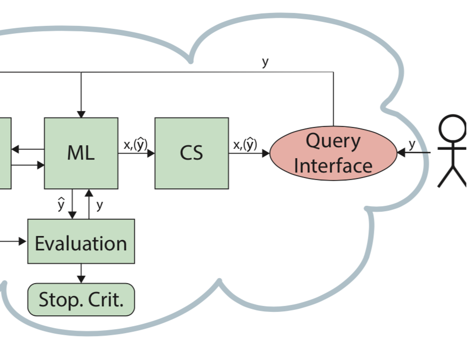

VIAL – A Unified Process for Visual-Interactive Labeling

EuroVA (2018)
Authors
Jürgen Bernard, Matthias Zeppelzauer, Michael Sedlmair, Wolfgang Aigner
Materials
Abstract
The assignment of labels to data instances is a fundamental prerequisite for many machine learning tasks. Moreover, labeling is a frequently applied process in visual interactive analysis approaches and visual analytics. However, the strategies for creating labels usually differ between these two fields. This raises the question whether synergies between the different approaches can be attained. In this paper, we study the process of labeling data instances with the user in the loop, from both the machine learning and visual interactive perspective. Based on a review of differences and commonalities, we propose the “visual interactive labeling” (VIAL) process that unifies both approaches. We describe the six major steps of the process and discuss their specific challenges. Additionally, we present two heterogeneous usage scenarios from the novel VIAL perspective, one on metric distance learning and one on object detection in videos. Finally, we discuss general challenges to VIAL and point out necessary work for the realization of future VIAL approaches.